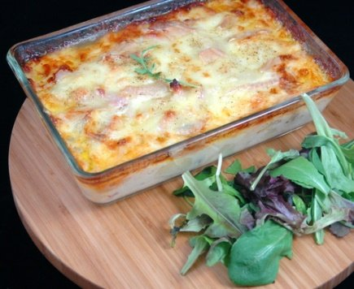

Truffade au saint-nectaire
Ingrédients
4×
- 800 g de pommes de terre
- 400 g de saint-nectaire
- 125 g de lardons
- 125 g de crème fraîche

Préparation
Étape 1
Cuire 800 g de pommes de terre sans trop les cuire. Couper 400 g de saint-nectaire en petits rectangles.
Étape 2
Disposer les pommes de terre dans un plat, puis le fromage et 125 g de lardons. Recouvrir de 125 g de crème fraîche.
Étape 3
Cuire 20 à 30min à 210ºC.
Résumé
800 g de pommes de terre
400 g de saint-nectaire
Cuire Couper
125 g de lardons
125 g de crème fraîche
Cuire 210ºC